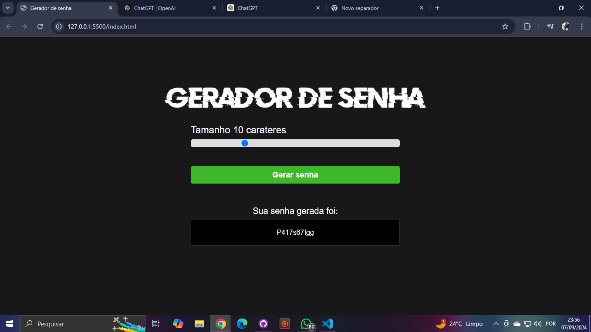
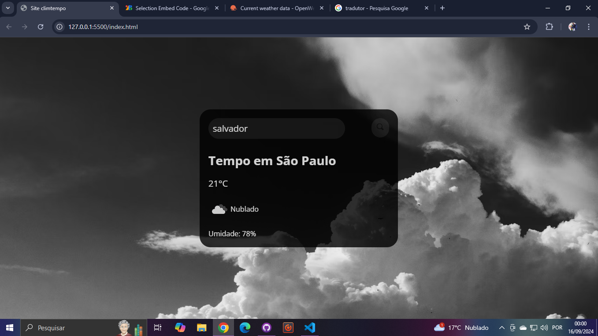
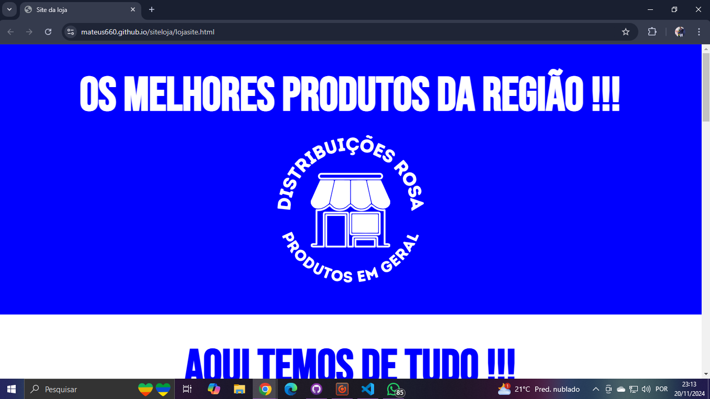
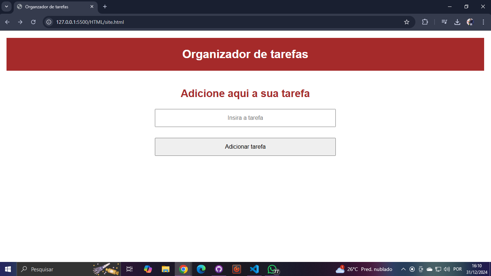

- Meu contato
- Meus Projetos
- Sobre mim

Front-End developer
Sou um Novo desenvolvedor web com vontade de aprender e desenvolver na área, aqui irei armazenar os meus pequenos projetos, para que possam dar uma olhada
Conhecimentos em
.png)

Meus projetos
Relógio digital
Este projeto apresenta um relógio digital interativo, desenvolvido utilizando as tecnologias HTML5, CSS3 e JavaScript. Ele exibe horas, minutos e segundos em tempo real, atualizados a cada segundo. O design é minimalista e responsivo, com uso de CSS3 para estilização moderna e JavaScript para a lógica de exibição do tempo. Este relógio digital é um ótimo exemplo de como integrar front-end e lógica de programação para criar componentes funcionais e esteticamente agradáveis na web
Clique aqui para acessar o projeto Clique aqui para acessar o projeto no GithubTela de login e senha
Neste projeto, desenvolvi uma interface de tela de login e cadastro utilizando HTML, CSS e JavaScript. A interface foi projetada para ser intuitiva e responsiva, garantindo uma experiência de usuário agradável em diferentes dispositivos. A funcionalidade principal do projeto inclui a validação de dados em tempo real, assegurando que o usuário preencha corretamente os campos de cadastro e login. Para a confirmação de cadastro, o projeto implementa uma verificação de correspondência de senha, garantindo a segurança dos dados inseridos. Além disso, o layout foi elaborado com técnicas de CSS modernas para oferecer um design limpo e profissional. Esse projeto demonstra minha habilidade em criar interfaces de usuário funcionais e seguras, com uma atenção especial à experiência do usuário e à integridade dos dados.
Clique aqui para acessar o projeto Clique aqui para acessar o projeto no GithubGerador de senha automático
Este projeto foi desenvolvido utilizando JavaScript, HTML e CSS, com o objetivo de oferecer uma ferramenta eficiente e fácil de usar para a criação de senhas seguras. O Gerador de Senhas Automático permite que os usuários escolham entre diferentes tipos de caracteres, como letras maiúsculas, minúsculas, números e símbolos, para criar senhas personalizadas de forma rápida. O projeto foi pensado para oferecer praticidade e segurança, além de ser totalmente responsivo, adaptando-se a diferentes dispositivos e tamanhos de tela.
Clique aqui para acessar o projeto Clique aqui para acessar o projeto no GithubSite Climatempo
Desenvolvi este projeto como uma solução prática para consultar as condições climáticas em qualquer lugar do mundo em tempo real. Utilizando HTML, CSS e JavaScript, criei um site que permite ao usuário pesquisar e visualizar dados meteorológicos atualizados, como temperatura, umidade, e condições gerais, diretamente na interface. O projeto se integra a uma API de clima global, demonstrando meu conhecimento em manipulação de APIs, responsividade e dinamismo no front-end. Este projeto reflete minha habilidade em criar aplicações úteis e interativas, com um design simples e eficiente.
Clique aqui para acessar o projeto Clique aqui para acessar o projeto no GithubSite Climatempo
Site para Loja de Produtos de Limpeza Desenvolvi um site para uma loja de produtos de limpeza utilizando HTML, CSS e JavaScript, focando em uma interface amigável e responsiva. O projeto incluiu a criação de páginas estruturadas para apresentação de produtos, implementação de estilos personalizados para garantir uma identidade visual atraente e o uso de JavaScript para funcionalidades dinâmicas, como formulários interativos e exibição de produtos. Esse projeto destaca minha capacidade de criar soluções completas para o comércio digital, unindo estética e funcionalidade.
Clique aqui para acessar o projeto Clique aqui para acessar o projeto no GithubOrganizador de Tarefas
Desenvolvido um Organizador de Tarefas com funcionalidades de login e cadastro, utilizando JavaScript, jQuery, HTML e CSS. Após o login, os usuários podem adicionar tarefas em uma interface dedicada. As tarefas são exibidas em uma tela separada, onde podem ser visualizadas e excluídas conforme necessário, proporcionando uma experiência prática e intuitiva.
Clique aqui para acessar o projeto Clique aqui para acessar o projeto no Github